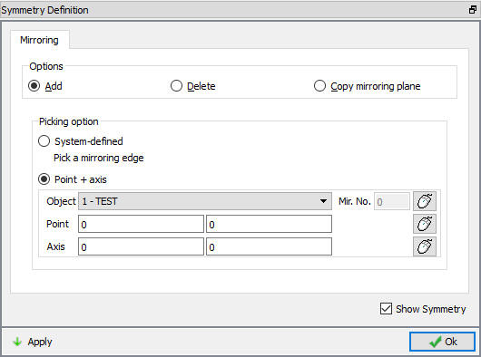
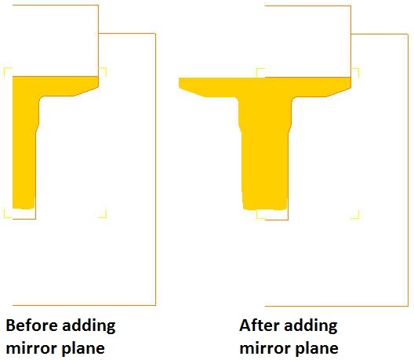
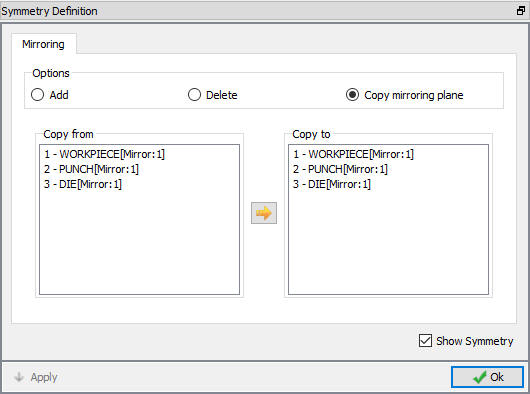
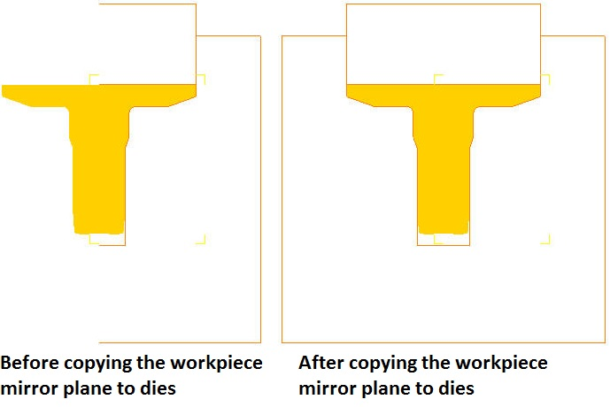
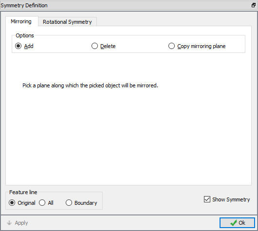
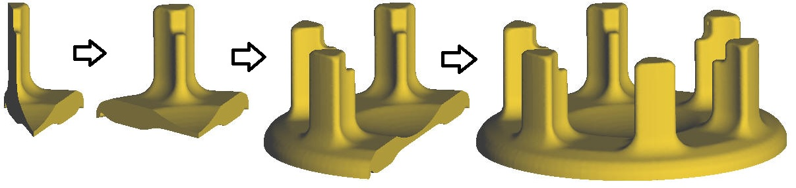
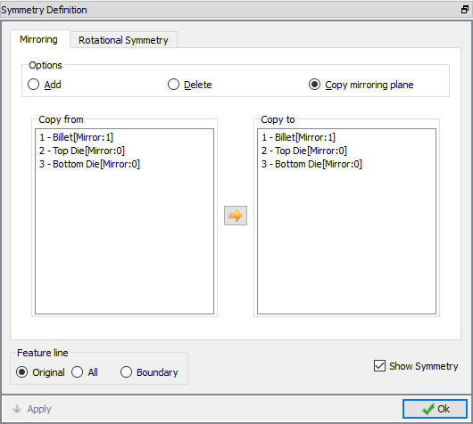
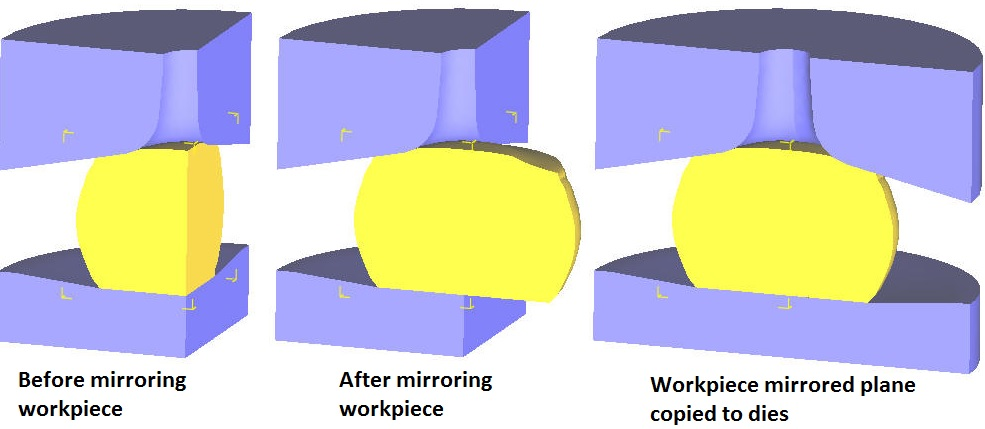
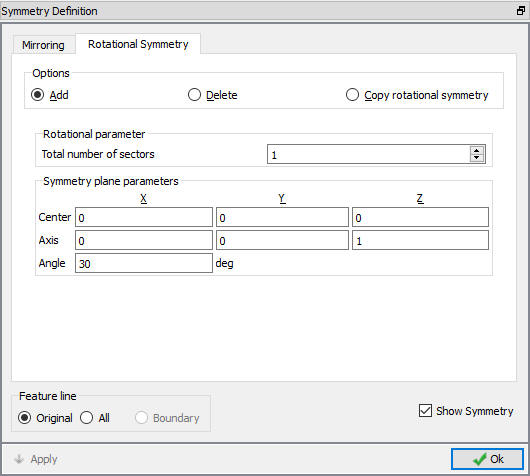

Method1: Select the Point + Axis radio button under the Add option and specify the centerline of the part by selecting the proper object and point on mirroring edge (See Fig. 26.6.15.1.). Click
The purpose of object mirroring and symmetry is to allow the user to visualize the both sides of the centerline of a part. If a part lies on the centerline, symmetry can be added by selecting the add radio button and picking the region of the part that touches the centerline. (See Fig. 26.6.15.1.. and Fig. 26.6.15.2..)

2D Object mirroring window

2D Mirrored object example
If the part does not lie on the centerline, there are two ways to mirror the part.
Method1: Select the Point + Axis radio button under the Add option and specify the centerline of the part by selecting the proper object and point on mirroring edge (See Fig. 26.6.15.1.).
Click  to see the symmetry.
to see the symmetry.
Method2: Select Copy Mirroring Plane radio button and mirrored object from Copy from objects list and unmirrored objects from Copy to objects list as shown in Fig. 26.6.15.3. Multiple objects to which mirror plane to be copied are selected by holding the control button on keyboard. After selection of objects, click on button to copy the mirror plane. (See Fig. 26.6.15.4.)

2D Copy mirroring plane window

2D mirrored objects example by copying the mirror planes
Delete Mirroring: To remove the mirrored section, select delete radio button and click on any mirrored section. Any section can be removed except for the original section.
A par t that has symmetry can be viewed as an entire part by selecting the Add radio button and clicking on the symmetry planes in the display window. To remove the mirrored section, select delete radio button and click on any mirrored section. (See Fig. 26.6.15.5. and Fig. 26.6.15.6.)

3D Object mirroring window

3D Mirrored gear carrier 30 deg symmetry object
Feature line
Original: Show all feature lines on original objects only.
All: Show all feature lines for both original and mirrored objects.
Boundary: Shows feature lines on boundary excluding mirrored plane. Boundary feature line is not available for Rotational symmetry.
If there are more than one symmetric object, then from already mirrored object symmetry plane can be copied to mirror other objects. This is done by using Copy Mirroring Plane option. By selecting mirrored object from “Copy from” objects list and unmirrored objects from Copy to objects list mirroring plane can be copied to mirror the object as shown in Fig. 26.6.15.7. Multiple objects to which mirror plane to be copied are selected by holding the control button on keyboard. After selection of objects click on button to copy mirror planes. (See Fig. 26.6.15.7. and Fig. 26.6.15.8.)

3D object copy mirror plane window

3D mirrored objects example by copying the mirror planes
To remove the mirrored section, select delete radio button and click on any mirrored section. Any section can be removed except for the original section.
Rotational symmetry can be added by selecting the Add radio button option and specify the Center, Axis, Angle of rotation for each sector and number of sectors. For example if the symmetric object symmetry plane origin is (0,0,0) and height is
in Z direction, then specify the centre center as (0,0,0), set the axis to the centerline axis (0,0,1) and define angle for rotation, then increase the total number of sectors to see the symmetry. (See Fig. 26.6.15.9.)

3D Object mirroring window (rotational symmetry)
Rotational parameter:
Total number of sections: By defining this, user can control number of sections.
As explained in the 3D planar symmetry mirroring even from the rotational symmetry, mirrored objects symmetry plane can be copied to an un-mirrored objects. Copy rotational symmetry provides same options as in mirror tab Copy mirror plane (See . Fig. 26.6.15.9.).
To remove the mirrored section, select delete radio button and click on any mirrored section. Any section can be removed except for the original section.